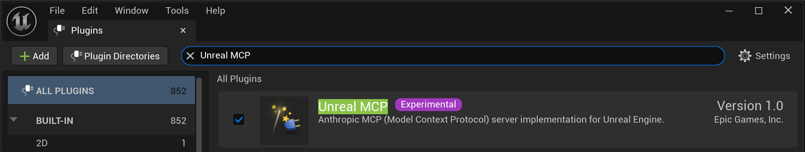
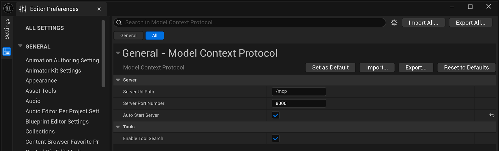
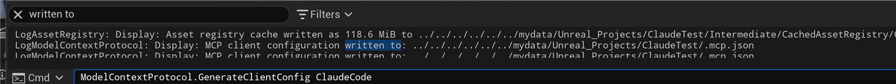
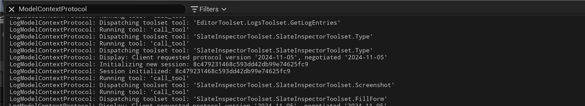

🔌 Setting Up Unreal MCP
In the previous lesson you learned what the Model Context Protocol is and how the agent-to-editor bridge works. Now you will build that bridge for real. In four short steps you will enable the plugin, review its settings, generate a client configuration, and confirm that the embedded server is live, following along with actual screenshots captured in Unreal Engine 5.8.
⚠️ Experimental in UE 5.8
The Unreal MCP plugin is marked Experimental in Unreal Engine 5.8. The exact setting names, default port, and command names shown here may change in future engine versions. If something does not match your editor, check the plugin's own settings and the official documentation. The steps and concepts stay the same even when a label moves.
🎯 Learning Objectives
By the end of this lesson, you will be able to:
- Enable the Unreal MCP plugin from the Plugins browser
- Locate the Model Context Protocol settings in Editor Preferences and read the server URL path, port, and auto-start options
- Generate a client configuration file with the GenerateClientConfig console command
- Confirm the embedded server is live and dispatching tools using the Output Log
- Diagnose the most common setup problems
Estimated Time: 20-30 minutes
Prerequisites: Lesson 11.1 (Introduction to AI-Assisted Workflows). A working Unreal Engine 5.8 project you are comfortable experimenting in.
📑 In This Lesson
Before You Begin
Setting up Unreal MCP has two halves. Inside Unreal, you enable a plugin and let it run a small server. Outside Unreal, you point an AI client (such as Claude Code, Cursor, or VS Code) at that server using a configuration file. The good news is that Unreal can write most of that configuration for you.
Here is the whole process at a glance before we walk through each step in detail:
flowchart LR
A["1. Enable the
Unreal MCP plugin"] --> B["2. Configure the
server settings"]
B --> C["3. Generate the
client config"]
C --> D["4. Verify the
live bridge"]
D --> E["✅ Ready for
AI-assisted work"]
style A fill:#667eea,color:#fff
style E fill:#4CAF50,color:#fff
Figure: The four setup steps in this lesson. Each one has a real screenshot so you can confirm your editor matches.
⚠️ Work Somewhere Safe
As covered in Lesson 11.1, do this in a test project or a project under version control. Enabling a plugin and letting an assistant act on your project are both easier to undo when you can roll back cleanly.
Step 1: Enable the Unreal MCP Plugin
Open the Plugins browser from the main menu: Edit · Plugins. This window lists every plugin the editor can see. Type Unreal MCP into the search box in the top-right to filter the list down to the one you want.
You are looking for the plugin named Unreal MCP, described as "Anthropic MCP (Model Context Protocol) server implementation for Unreal Engine" and published by Epic Games, Inc. Tick its checkbox to enable it.

Figure: The Unreal MCP plugin enabled in the Plugins browser. Note the purple Experimental badge next to its name. · Experimental in UE 5.8.
💡 What Gets Enabled
The Unreal MCP plugin depends on a couple of companion plugins that provide the machinery from Lesson 11.1: a Toolset Registry (the catalog of toolsets) and the toolsets themselves. Unreal enables those dependencies for you, so you only need to tick the one plugin.
⚠️ Restart Required
Enabling a plugin does not take effect until the editor restarts. Unreal will prompt you to restart. Do so before continuing, otherwise the server and its settings will not be available yet.
Step 2: Configure the Server
With the plugin enabled and the editor restarted, its settings live in Editor Preferences. Open Edit · Editor Preferences, then select Model Context Protocol from the list on the left. (If you cannot find it, type "Model Context" into the settings search box at the top.)
The settings are grouped into Server and Tools:

Figure: The Model Context Protocol settings in Editor Preferences. The defaults are all you need to get started. · Experimental in UE 5.8.
Server Url Path is the path portion of the address, /mcp by default. Server Port Number is 8000 by default. Together with the localhost host, these form the full address a client connects to:
http://127.0.0.1:8000/mcpAuto Start Server is on by default, which means the embedded server starts automatically each time you open the editor. That is exactly what you want for everyday use, so leave it checked. Enable Tool Search (under Tools) lets clients discover tools through the Toolset Registry, as described in Lesson 11.1.
✅ Pro Tip
Leave the defaults unless you have a reason to change them. The most common reason to change the Server Port Number is a conflict: if something else on your machine already uses port 8000, pick another free port here. If you do change it, remember to regenerate the client configuration in the next step so the client points at the new port.
Step 3: Generate the Client Configuration
Your AI client needs to know where the server is. Rather than writing that configuration by hand, the plugin ships a console command that generates it for you. Open the editor console (the Cmd box at the bottom of the Output Log, or the command bar in the status bar) and run:
ModelContextProtocol.GenerateClientConfig ClaudeCodeThe argument names which client you are configuring. The supported targets are ClaudeCode, Cursor, VSCode, Gemini, Codex, and All. Use the one that matches the assistant you plan to connect, or All to write configuration for every supported client at once.
The command writes an .mcp.json file into your project folder and reports the location in the Output Log:

Figure: Running the GenerateClientConfig command writes an .mcp.json client configuration into the project folder and logs where it went. · Experimental in UE 5.8.
That .mcp.json file is a small text file describing the server address (http://127.0.0.1:8000/mcp) in the format your client expects. Point your client at it, or place your client's config where it looks for one, and the client will know how to reach the editor.
💡 Why a Generated File?
Different clients expect their configuration in slightly different shapes and locations. Letting Unreal generate the file removes a common source of typos and mismatched ports, and it always reflects the current Server settings from Step 2.
Step 4: Verify the Live Bridge
Before you rely on the bridge, confirm it is actually running. The clearest proof lives in the Output Log. Open it (the Output Log button in the status bar, or Window · Output Log) and type ModelContextProtocol into its Search Log box to filter out everything else.
When a client connects and starts working, the server logs each step: it negotiates a protocol version, initializes a session, and dispatches each tool call to the right toolset. Seeing these lines is your confirmation that the bridge is live end to end.

Figure: The Output Log filtered to ModelContextProtocol, showing the live server negotiate a session and dispatch toolset tools. Each "Dispatching toolset tool" line is one action the agent asked the editor to perform. · Experimental in UE 5.8.
Read a few of those lines and the architecture from Lesson 11.1 comes to life. Client requested protocol version, negotiated is the handshake. Session initialized means a client is connected. Each Dispatching toolset tool line names exactly which toolset and tool ran, for example a logs tool or a UI-inspection tool. That is the Toolset Registry routing a request to the right place.
✅ You Are Connected
If you see session and dispatch lines appear as your client works, the setup is complete. The editor is listening, the client is connected, and tool calls are flowing. You are ready for the hands-on workflow in the next lesson.
Troubleshooting
If something is not working, most problems fall into a handful of categories. Work through these in order.
The plugin is not in the list
Clear the Plugins search box and confirm you are searching by the exact name, Unreal MCP. Because it is an Experimental, Built-In plugin, make sure the browser is not hiding built-in plugins through its filters.
Settings or server missing after enabling
Enabling a plugin only takes effect after an editor restart. If the Model Context Protocol settings do not appear in Editor Preferences, or the server never starts, restart the editor and try again.
The server does not start
Check that Auto Start Server is enabled in Editor Preferences (Step 2). Then open the Output Log filtered to ModelContextProtocol and look for warnings or errors. A common cause is a port already in use: if port 8000 is taken, change the Server Port Number and regenerate the client configuration.
The client cannot connect
Confirm the address is exactly http://127.0.0.1:8000/mcp (or your custom port). Regenerate the configuration with GenerateClientConfig so the client picks up the current settings. Remember the server is localhost-only by default, so the client must run on the same machine as the editor.
💡 The Log Is Your Friend
Almost every setup issue shows up in the Output Log under the ModelContextProtocol category. When in doubt, filter to it and watch what happens as you connect. The log will usually tell you exactly what went wrong.
Knowledge Check
Question 1
From the Server settings (Server Url Path /mcp and Server Port Number 8000), what is the full address a client uses to reach the editor?
Correct answer: B · The localhost host (127.0.0.1) plus the port (8000) plus the URL path (/mcp) form http://127.0.0.1:8000/mcp. Because it is localhost, only clients on your own machine can reach it by default.
Question 2
You just ticked the checkbox to enable the Unreal MCP plugin. What must you do before its settings and server are available?
Correct answer: B · Enabling a plugin takes effect only after an editor restart. Unreal prompts you to restart; do so before looking for the settings.
Question 3
Which console command generates the client configuration file?
Correct answer: A · ModelContextProtocol.GenerateClientConfig writes an .mcp.json file. You pass a client name such as ClaudeCode, Cursor, VSCode, Gemini, Codex, or All.
Question 4
What does running GenerateClientConfig produce, and where (per this lesson)?
Correct answer: B · The command writes a small .mcp.json file describing the server address into the project folder, and the Output Log reports the exact path it used.
Question 5
Which Output Log category should you filter to when confirming the live bridge or diagnosing setup problems?
Correct answer: C · The LogModelContextProtocol (searchable as "ModelContextProtocol") category logs session handshakes and every dispatched toolset tool, so it is the first place to look when verifying or troubleshooting the bridge.
Summary
You have turned the concept from Lesson 11.1 into a working setup. Here is the path you followed:
Enable the plugin. In Edit · Plugins, search for and enable Unreal MCP (Experimental), then restart the editor so the change takes effect.
Configure the server. In Edit · Editor Preferences · Model Context Protocol, the server defaults to /mcp on port 8000 with Auto Start Server enabled, giving the address http://127.0.0.1:8000/mcp.
Generate the client configuration. Run ModelContextProtocol.GenerateClientConfig with your client name to write an .mcp.json into the project folder.
Verify the live bridge. Filter the Output Log to ModelContextProtocol and watch the server negotiate sessions and dispatch toolset tools. Those lines are proof the bridge is running.
🔑 Key Takeaways
- Enable Unreal MCP in Edit · Plugins, then restart the editor
- The server settings live in Editor Preferences · Model Context Protocol
- Defaults give the address http://127.0.0.1:8000/mcp, localhost-only
- GenerateClientConfig writes an .mcp.json for your chosen client
- Supported clients: ClaudeCode, Cursor, VSCode, Gemini, Codex, All
- The LogModelContextProtocol category confirms and diagnoses the bridge
What's Next?
The bridge is built and verified. In the final lesson of this module, Your First AI-Driven Workflow, you will put it to work: give an assistant a plain-language goal and watch it author something real in your project through the very toolsets you just saw dispatching in the log.